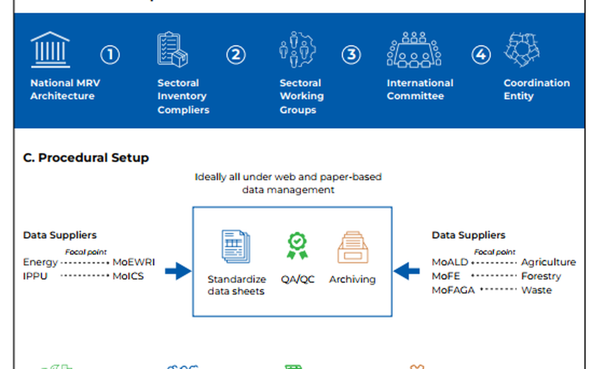

Carbon Pricing MRV Gap Analysis + Institutional Framework (Nepal)
MRVInstitutional mapping, reporting architecture, verification pathways, and registry/compliance logic — designed for national delivery rather than theory-only design.
Carbon pricingInstitutionsQA/QCRegistry